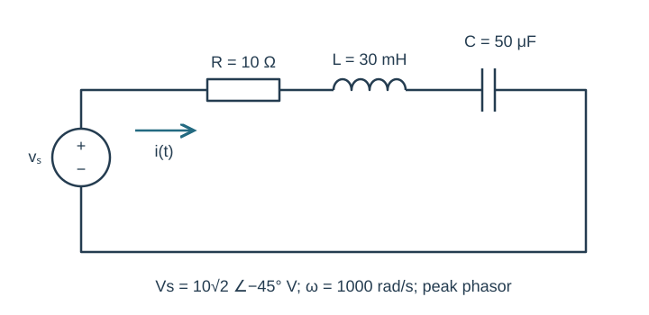
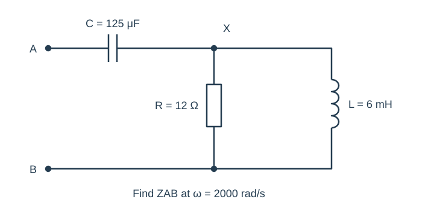
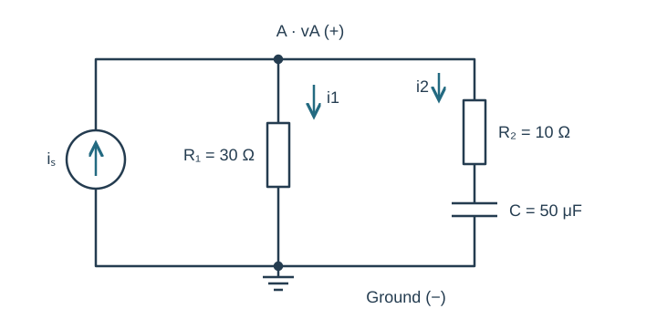
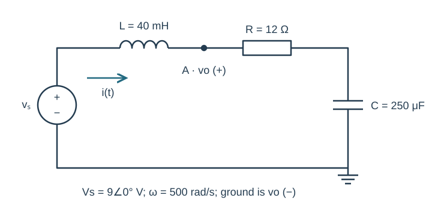
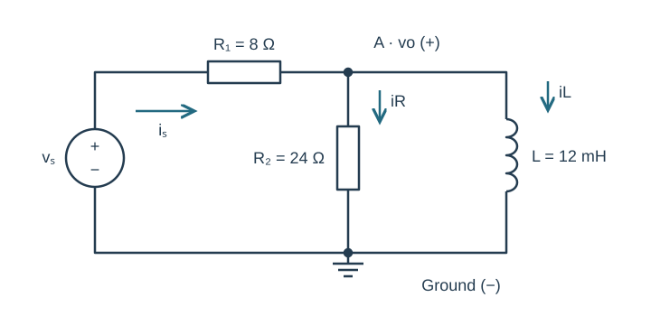

Course practice / Batch 08 / 2026-10-11 PDT
ENGR 202
正弦、相量与阻抗
Sinusoids, phasors & impedance · 第 8 组：HW 1 风格 5 题 + HW 2 风格 5 题
Read a waveform from two measured peaks
A zero-offset sinusoidal voltage has peak value +5 V and minimum −5 V. Two consecutive positive maxima occur at t = 0.50 ms and t = 4.50 ms. Use t in seconds in the final equation.
- Find the period, frequency and angular frequency.
- Write v(t) as a positive-amplitude cosine with principal phase in (−180°,180°], and state its peak phasor.
- Find v(0), the first minimum at or after zero, and the first downward zero crossing at or after zero.
- Sketch one period starting at t = 0 with time in ms and voltage in V.
中文提示（不含解答）
相邻同类极值的时间差才是一个周期；将已知峰值时刻代入余弦相位条件。
Advance a sine and compare the phases
Let \(x(t)=4\sin(300t-\pi/6)\;\mathrm V\), and define \(y(t)=x(t+\pi/900\;\mathrm s)\).
- Give positive-amplitude cosine forms and peak phasors for x and y.
- Calculate the time advance in ms and the phase change in radians and degrees. Express the advance as a fraction of one period.
- Evaluate x and y at t = 0 and t = T/4, where T is their common period.
- Draw X and Y on equal-scale complex axes and explain the rotation caused by the advance.
中文提示（不含解答）
正弦转余弦减去 90°；时间提前会给相位增加 ωΔt。
Track signs through a product and quotient
Let \(a=-6+j8\) and \(b=2+j\).
- Find a + b, ab and a/b in rectangular form.
- Convert a, b, ab and a/b to polar form with positive magnitudes and principal phases in (−180°,180°].
- Verify (a/b)b = a by rectangular arithmetic, and verify the magnitude and phase rules for the quotient.
- State the quadrant of every rectangular result and explain why using arctan(imaginary/real) without a quadrant check can fail.
中文提示（不含解答）
乘除后要保留实部和虚部的符号；atan2 比直接取两个数的比值更可靠。
Combine a shifted cosine with an unshifted sine
The total voltage is \(v(t)=9\cos(700t+\pi/3)+3\sqrt3\sin(700t)\;\mathrm V\).
- Write the two peak phasors using a cosine reference.
- Find the total phasor in rectangular and polar form, then express v as one positive-amplitude cosine.
- Check the original sum and combined form at t = 0 and t = π/1400 s.
- Draw a tip-to-tail phasor plot on equal-scale voltage axes. Explain why the second term reduces, rather than increases, the imaginary part of the first phasor.
中文提示（不含解答）
正的正弦对应负 90°的余弦相位；先统一参考再相加。
Recover a third-quadrant phasor from samples
A zero-offset waveform of angular frequency ω = 800 rad/s has the form \(v(t)=a\cos(800t)+b\sin(800t)\;\mathrm V\), with real a and b. Measurements give v(0) = −3 V and v(T/4) = +4 V, where T is the period.
- Find a and b and write the cosine-reference phasor in rectangular form.
- Give its positive magnitude and principal phase, then write one positive-amplitude cosine for v(t).
- Predict v(T/2) and v(3T/4), and use all four samples to sketch one cycle.
- Plot the phasor and explain why b is the negative of its imaginary coefficient.
中文提示（不含解答）
四分之一周期时余弦为零、正弦为一；最后转换成相量时注意虚部符号。
Series voltages when the current phase is negative
The source \(v_s(t)=10\sqrt2\cos(1000t-\pi/4)\;\mathrm V\) drives R = 10 Ω, L = 30 mH and C = 50 μF in series. Current is clockwise from the positive source terminal. Element voltages are passive drops along the current.
- Draw the impedance circuit and state the source phasor.
- Find total impedance and current in rectangular and polar form; write i(t).
- Find VR, VL and VC and verify their sum equals Vs.
- Find i(0) and i(π/2000 s). State how current phase compares with source phase.

中文提示（不含解答）
源相位和阻抗相位都要计入；负相位不表示电流幅值为负。
A capacitor before a parallel RL pair
At ω = 2000 rad/s, terminal A connects through C = 125 μF to node X. From X to terminal B are R = 12 Ω and L = 6 mH in parallel. There are no other connections.
- Calculate each component impedance and the parallel equivalent ZXB.
- Find ZAB in rectangular and polar form. State whether its net reactance is inductive or capacitive.
- Verify ZXB by adding branch admittances.
- If a peak voltage of 10∠0° V is applied from A to B, find the input current in rectangular and polar form.

中文提示（不含解答）
电容与整个并联等效串联；不要把电容直接并入 R 和 L 的导纳。
A current source feeding a resistor and a series RC branch
The source \(i_s(t)=0.40\cos(1000t)\;\mathrm A\) injects current upward into node A. One branch from A to ground is R₁ = 30 Ω. The other branch is R₂ = 10 Ω in series with C = 50 μF. Define vA positive at A and both branch currents downward.
- Draw the impedance circuit and compute total admittance.
- Find VA in rectangular and polar form and write vA(t).
- Find I1 and I2 and verify I1 + I2 = Is.
- Predict vA(0) and vA(π/2000 s). Explain why the capacitor shares the second branch current rather than the source current.

中文提示（不含解答）
先把 R₂ 与 C 串联相加，再求整条支路的导纳。
Output across a resistor and capacitor together
The source \(v_s(t)=9\cos(500t)\;\mathrm V\) drives a series loop containing L = 40 mH, R = 12 Ω and C = 250 μF, in that order from the positive source terminal. The lower capacitor plate is grounded. Define vo from node A between L and R to ground, so output spans R and C. Current follows the loop from the source through L, R and C.
- Calculate total input impedance and the combined output impedance.
- Use voltage division to find Vo in rectangular and polar form and write vo(t).
- Find I and each passive element voltage. Verify Vo = VR + VC and Vs = VL + Vo.
- Predict vo(0) and vo(π/1000 s). Explain why the inductor impedance belongs in the divider denominator but not its output numerator.

中文提示（不含解答）
先明确输出端跨越了哪两个元件，再写分压公式的分子。
A loaded RL divider with a real source phasor
The source \(v_s(t)=20\cos(2000t)\;\mathrm V\) connects through R₁ = 8 Ω to node A. R₂ = 24 Ω and L = 12 mH each connect from A to ground. Output vo is positive at A. Source current flows through R₁ toward A, and load currents are downward.
- Find the parallel-load and total input impedances.
- Find source-current and output-voltage phasors in rectangular and polar form, then write vo(t).
- Calculate resistor and inductor load currents and verify KCL. Check KVL using the voltage across R₁ and Vo.
- Predict vo at t = 0 and t = π/4000 s. For optional LTspice checking, give source frequency in Hz and the equivalent sine-source phase, then compare those two positions in a late cycle after transients settle. Label axes with units and match current directions.

中文提示（不含解答）
并联支路的电压相同；电感电流相对于支路电压滞后 90°。